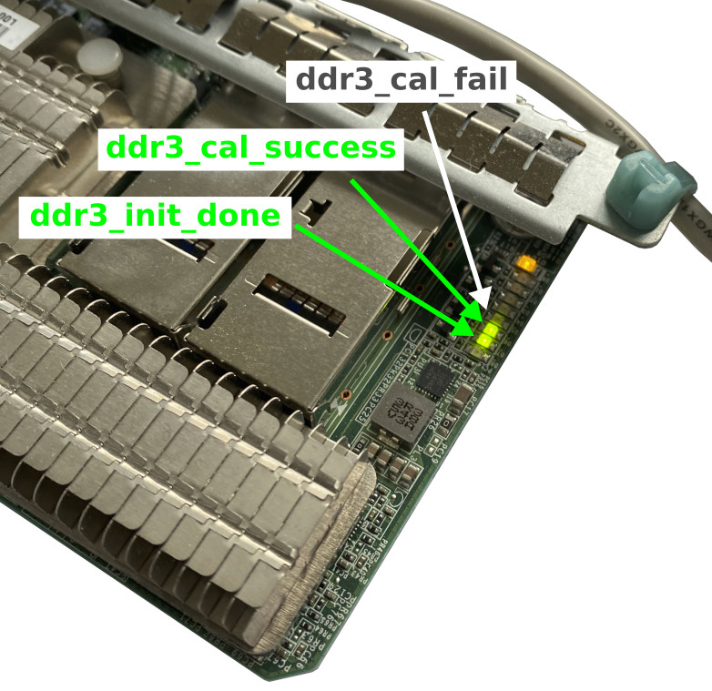
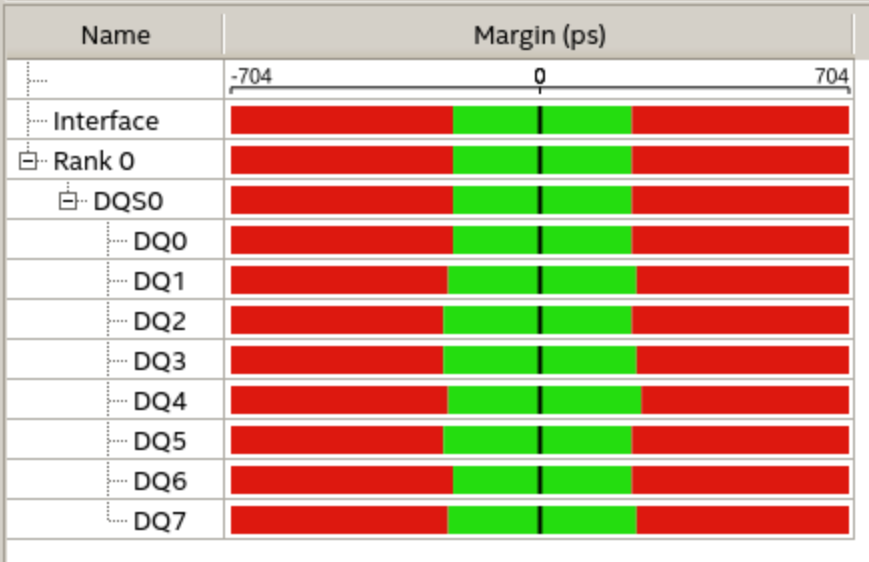
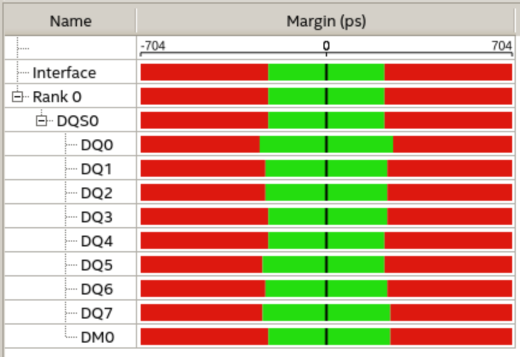
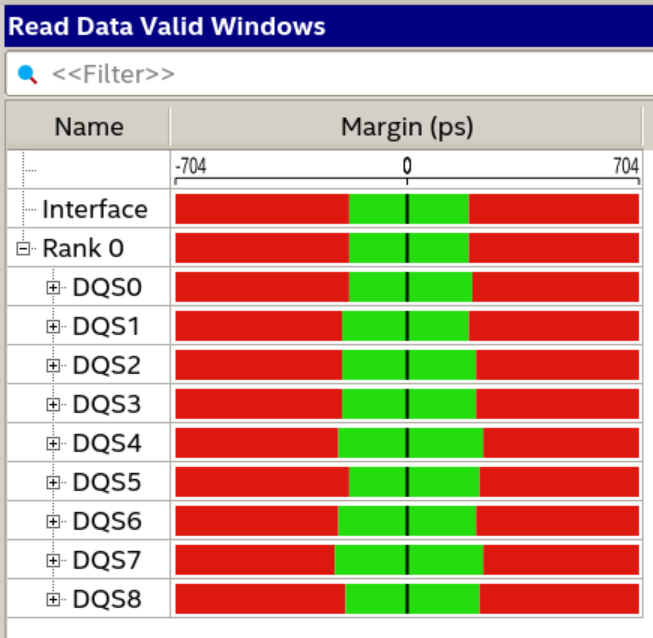
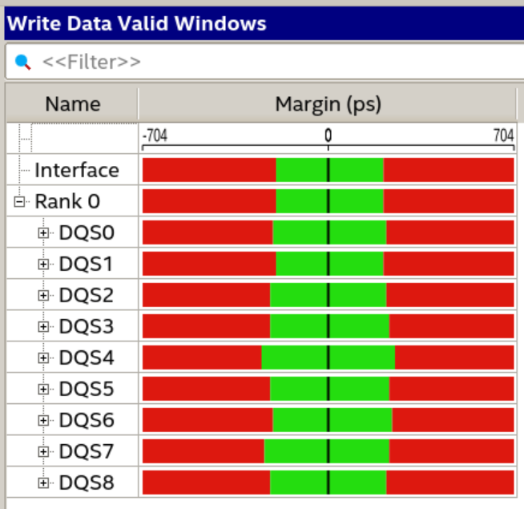
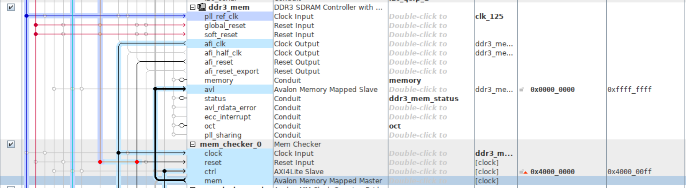
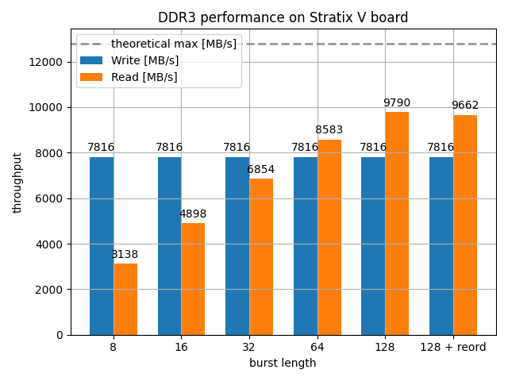
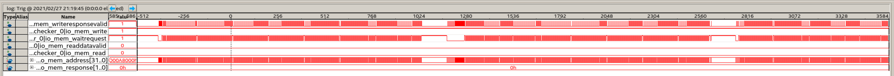
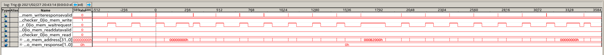

- on Sun 28 February 2021
In my last blog post I have presented a method to extract the DDR3 pinout from the bitstream, obtained from the on-board Flash. In this post I will use the information obtained from the bitstream to instantiate a DDR3 memory controller and measure its performance.
DDR3 SDRAM Controller with UniPHY
Once the pinout was obtained from the bitstream and the DDR3 part number was identified from the markings on the board, instantiating the DDR3 controller was relatively straightforward. To speed up the development, I first started with just only 1 DDR3 chip (8-bit width).
The first sign of the success were the LEDs indicating that the DDR3 initialization controller has finished its job and that the calibration (of the delay chains) was successfully completed.

EMIF Debug Toolkit
As mentioned in part 3 of this series, I have spent quite some time making the JTAG work. OpenOCD was able to detect the device in the JTAG chain, but I wanted to have a native integration with Intel tools.
The efforts have now paid off, as I was able to use External Memory InterFace Debug Toolkit to inspect the calibration results and obtain other internal data from the DDR3 memory controller.
Single bank
Presented in the following two figures are the so-called margin reports for the read and write cycles. At the start-up, the controller performs a series of reads and writes, and measures the data valid window. This information can be then retrieved over the JTAG (with EMIF Debug Toolkit).


Full interface
Once it was clear that the interface works correctly (and that the reverse-engineering procedure described in my previous blog post works), I extended the interface to the full 72-bits and enabled the ECC.


The margin report from the EMIF Debug Toolkit unfortunately do not convey information on whether the results are as expected for the DDR3 interface. The data valid window is also not presented in a misleading way, with the Unit Interval (UI) being indicated to be 1400 ps, while in reality it is only 625 ps (for the operation at 1600 MT/s).
In a presentation of a Cyclone 10 board with a DDR3 memory controller, Intel shows a similar result to the one achieved on the Stratix V board. From this I would assume that the DDR3 interface is configured correctly.
Memory Checker IP
At this point we know that all data and control pins are working correctly, but we have not yet really tested if the address decoding works properly.
For this task I have developed a small IP core, called Memory Checker. It has an Avalon-MM master interface that can be connected to the DDR3 memory controller. The IP can be instructed to either populate the memory with one of the 8 patterns ("all 0s", "all 1s", "walking 1", "walking 0", "alternate", "8-bit counter", "32-bit counter", "128-bit counter") or to read the content back and check the content of the memory against the expected value. The results of the checker are made available to software through the control interface.
Initially I wanted to use the AXI interface on this core (to make it compatible) with both Intel and Xilinx tools, but unfortunately I could not make the bursts work in the Intel Platform Designer (previously known as Qsys) with the AXI-to-Avalon adapter.
Memory Checker IP in its natural habitat, connected to the DDR3 memory controller:

Driver
The IP also provides a driver,
which gets automatically included in the BSP. The function mem_check() performs
the memory check and outputs the information on the stdout.
Output
The output from the memory test procedure is presented below. The main function first confirms that it is talking to the right IP (by comparing the expected and the real value of the ID register), then retrieves the configuration of the IP (Avalon-MM interface width, burst length) and then continues with the test procedure for all eight test modes. After each test is complete, the result (PASS or FAIL) is printed, and the throughput is presented.
To test the entire 4GB of RAM, the entire procedure takes only several seconds, which is significantly faster than the SW-based memory test, provided as a part of Nios example design.
[mem check] =================================================
[mem check] IP id = 0x3e3c8ec8, version = 10003
[mem check] Avalon width = 64 bytes, burst len = 128
[mem check] mode = all 0s
[mem check] results = PASS (67108860 / 67108860)
[mem check] write throughput = 7816 MB/s
[mem check] read throughput = 9662 MB/s
[mem check] mode = all 1s
[mem check] results = PASS (67108860 / 67108860)
[mem check] write throughput = 7816 MB/s
[mem check] read throughput = 9662 MB/s
[mem check] mode = walking 1
[mem check] results = PASS (67108860 / 67108860)
[mem check] write throughput = 7816 MB/s
[mem check] read throughput = 9662 MB/s
[mem check] mode = walking 0
[mem check] results = PASS (67108860 / 67108860)
[mem check] write throughput = 7816 MB/s
[mem check] read throughput = 9662 MB/s
[mem check] mode = alternate
[mem check] results = PASS (67108860 / 67108860)
[mem check] write throughput = 7816 MB/s
[mem check] read throughput = 9662 MB/s
[mem check] mode = 8-bit counter
[mem check] results = PASS (67108860 / 67108860)
[mem check] write throughput = 7816 MB/s
[mem check] read throughput = 9662 MB/s
[mem check] mode = 32-bit counter
[mem check] results = PASS (67108860 / 67108860)
[mem check] write throughput = 7816 MB/s
[mem check] read throughput = 9662 MB/s
[mem check] mode = 128-bit counter
[mem check] results = PASS (67108860 / 67108860)
[mem check] write throughput = 7816 MB/s
[mem check] read throughput = 9662 MB/s
Performance
Although the performance of the HW-accelerated memory test is several times better than the SW-based memory test, I still wanted to see the throughput which can be achieved and how it compares to the full bus throughput (i.e. theoretical maximum).
From my previous experience with Xilinx DDR4 controller I expected to achieve the DDR4 bus utilization of around 80%.
Show in the figure below is the read and write throughput for different burst lengths.

It can be noted that the read throughput reaches a reasonable level at the large bursts. Quite surprisingly, the write level does not reach a reasonable level, it only reaches 60% of the full bus throughput, and it is also not affected by the burst length.
To investigate this further, I have taken two captures of the Avalon interface, once for the burst length of 4 and once for the burst length of 128.
Burst length 4:

Burst length 128:

With these captures I can calculate what is the interface utilization, i.e. for
what percentage of cycles was waitrequest signal also being asserted when the
write signal was being asserted. This number is roughly 60% for both cases,
thus confirming the write throughput measurements from the Memory Checker IP.
Conclusion
In this blog post I have used the knowledge obtained from reverse-engineering the bitstream and instantiated the DDR3 controller. To verify the functionality of the controller and the board itself (it was purchased of eBay for 40 USD after all), I have used Intel tools (EMIF Debug Toolkit) and developed a Memory Checker IP. The test successfully ran overnight and did not detect any errors.
All trademarks and registered trademarks are the property of their respective owners.